방송통신기사 (2020-03-07 기출문제)
1과목: 디지털 전자회로
1. 다음 그림은 정류회로의 입력파형과 출력파형을 나타내었다. 주어진 입출력 특성을 만족시키는 전류회로는? (단, 다이오드의 문턱전압은 0.7[V]이고, 변압기의 권선비는 1:1이라 가정한다.)
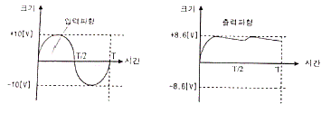
- 반파정류회로
- 유도성 중간탭 전파정류회로
- 2배압 정류회로
- 용량성 필터를 갖는 브리지 전파정류회로
(정답률: 76%)

2. 다음 정류회로에 대한 설명으로 옳은 것은?
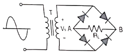
- 저전압 정류할 대 적합하다.
- Vs가 양의 전압일 때 RL 양단에 전류가 흐르지 않는다.
- RL에 걸리는 전압의 최대치는 T의 2차 전압의 최대치에 가깝다.
- 다이오드에 걸리는 역방향 전압의 최대치는 T의 2차 전압의 최대치에 2배에 가깝다.
(정답률: 68%)
3. 다음 정전압 회로에 대한 설명으로 틀린 것은?
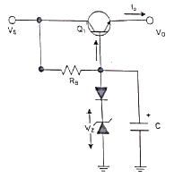
- 다이오드를 통하여 온도변화에 대해 안정하다.
- 캐패시터를 통하여 리플성분을 제거해 준다.
- 출력 전압(Vo)은 제너전압(Vz)에 순방향 전압을 더한 값이다.
- 동전위 정전압 회로이다.
(정답률: 61%)
4. 공통 베이스(Common Base) 증폭기 회로에서 켈렉터 전류가 4.9[mA]이고, 이미터 전류가 5[mA]이었을 때 직류전류 증폭률은?
- 0.98
- 1.02
- 1.27
- 1.31
(정답률: 71%)
5. 다음과 같은 궤환 증폭회로(부궤환)의 궤환 증폭도(Ar)는?
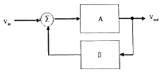
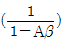
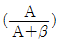
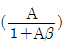
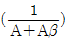
(정답률: 67%)
6. 다음 궤환회로에 대한 설명으로 틀린 것은?
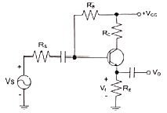
- 궤환으로 입력 임피던스는 감소한다.
- 궤환으로 전체 이득은 감소한다.
- 궤환으로 주파수 일그러짐이 감소한다.
- 궤환으로 출력 임피던스는 감소한다.
(정답률: 47%)
7. 전력증폭회로의 동작등급에서 가장 선형적인 동작이 가능한 것은?
- A급
- AB급
- B급
- C급
(정답률: 86%)
8. 다음 B급 SEPP(Single-Ended Push-Pull) 증폭기에서 트랜지스터 1개당 최대 전력 손실은 약 몇 [W]인가?
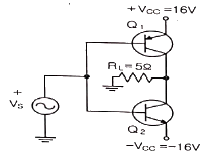
- 1.5[W]
- 2.5[W]
- 3.5[W]
- 4.5[W]
(정답률: 72%)
9. 다음은 윈-브리지 발진회로를 나타내었다. 발진주파수를 구하는 식은 어는 것인가? (단, 여기서 R1=R2=R, C2=C1=C 이다.)
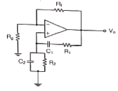
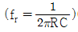
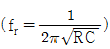
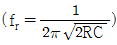
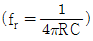
(정답률: 52%)
10. 다음 중 LC 발진회로에서 발진주파수의 변동요인과 대책이 틀린 것은?
- 전원전압의 변동 : 직류안정화 바이어스 회로를 사용
- 부하의 변동 : Q가 낮은 수정핀을 사용
- 온도의 변화 : 항온조를 사용
- 습도에 의한 영향 : 회로의 방습 조치
(정답률: 68%)
11. 그림과 같은 수정편의 등가회로에서 Lo=25[mH], Co=1.6[pF], Ro=5[Ω], C1=4[pF] 일 때 직렬 공진 주파수는 약 얼마인가? (단, π=3.14)
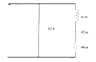
- 766.2[kHz]
- 776.2[kHz]
- 786.2[kHz]
- 796.2[kHz]
(정답률: 53%)
12. 진폭변조(Amplitude Modulation)에서 반송파 전력이 15[kW]일 때, 변조도를 100[%]로 변조하면 피변조파 전력은 얼마인가?
- 12.5[kW]
- 15[kW]
- 20[kW]
- 22.5[kW]
(정답률: 51%)
13. 다음은 FM복조(검파)회로의 일부이다. 이 회로의 설명으로 옳은 것은?
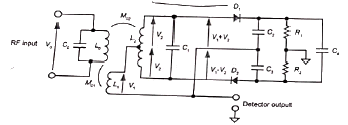
- 주로 FM복조, AM복조, 주파수 합성, 전화기의 톤(Tone) 검출 주파수 추이 그리고 모터 속도 제어 등에 이용한다.
- 입력신호의 진폭에 비례하여 출력전압 신호를 만들어 내는 장치이다.
- 진폭제한기(Limitter)의 기능을 겸하고 있는 주파수 변별기이다.
- 변별기 자체에 진폭제한 작용이 없으므로 앞단에 반드시 진폭제한기를 달아주어야 한다.
(정답률: 63%)
14. 다음 중 주파수 변조에 대한 설명으로 틀린 것은?
- 직접 FM과 간접 FM방식이 있다.
- 입력신호에 따라 반송파의 주파수를 변화시킨다.
- 선형 변조방식이다.
- 반송파로는 cos 함수 또는 sin 함수와 같은 연속함수를 사용한다.
(정답률: 62%)
15. 9,600[bps]의 비트열을 16진 PSK로 변조하여 전송하면 변조속도는?
- 1,200[Baud]
- 2,400[Baud]
- 3,200[Baud]
- 4,600[Baud]
(정답률: 60%)
16. 다음 중 입력 전압이 일정한 값 이상이 되면 출력 펄스가 상승하고, 입력 전압이 일정한 값 이하가 되면 출력 펄스가 하강하는 특성을 이용하여 주파수 변환회로로 사용하는 회로는?
- 슈미트 트리거 회로
- 클리프 회로
- 리미터 회로
- 클램핑 회로
(정답률: 70%)
17. 다음 중 파형 조작 회로에서 클리퍼(Clipper)회로에 대한 설명으로 옳은 것은?
- 입력 파형에서 특정한 기준 레벨의 윗부분 또는 아랫부분을 제거하는 것
- 입력 파형에 직류분을 가하여 출력 레벨을 일정하게 유지하는 것
- 입력 파형중에 어떤 특정 시간의 파형만 도출하는 것
- 입력의 Step전압을 인가하는 것
(정답률: 75%)
18. 다음 중 논리방정식이 잘못된 것은?
- A+1=A
- A·0=0
- A+A·B=A
- A·(A+B)=A
(정답률: 63%)
19. 다음의 진리표에 해당하는 논리회로도는?
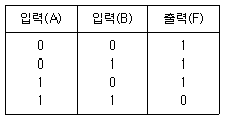
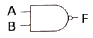
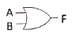
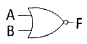
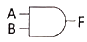
(정답률: 70%)
20. 다음 그림과 같은 회로의 명칭은?
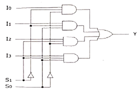
- 병렬가산기
- 멀티플렉서
- 디멀티플렉서
- 디코더
(정답률: 70%)
2과목: 방송통신 기기
21. 다음 중 방송망을 구성하는 전송설비가 아닌 것은?
- TBC
- STL
- FPU
- SNG
(정답률: 63%)
22. 텔레비전 방송에서 시스템의 조절 및 조정을 위하여 타이밍 신호를 발생시키는 장치는?
- 동기신호 발생기(Sync Generator)
- 파형신호 발생기(Pattern Generator)
- 영상신호 발생기(Video signal Generator)
- 고주파신호 발생기(Radio Generator)
(정답률: 79%)
23. 다음 중 방송, 통신서비스용 네트워크로 가장 우수한 품질의 서비스 제공이 가능한 전송망은?
- VDSL
- ADSL
- FTTH
- HFC
(정답률: 62%)
24. 위성체에서 송신하는 마이크로파 신호를 수신하여 중간 주파수 대역으로 변환시키는 장치는?
- ADA
- LNB
- ONU
- VDA
(정답률: 82%)
25. 우리나라에서 사용하고 있는 FM 방송의 주파수 대역으로 옳은 것은?
- 88[GHz]~108[GHz]
- 88[Hz]~108[kHz]
- 88[kHz]~108[kHz]
- 88[MHz]~108[MHz]
(정답률: 70%)
26. 라디오 송신 안테나의 근처에는 강한 전파로 인하여 다른 방송의 수신이 방해를 받게 되는 지역을 무엇이라고 하는가?
- 페이딩 (Pading) 지역
- 블랭킷 (Blanket) 지역
- 리전 (Region) 지역
- 오버랩 (Overlap) 지역
(정답률: 88%)
27. 우리나라의 지상파 DMB 방송은 지상파 TV의 VHF 채널을 이용하고 있다. 이 방송은 TV 한 채널에 몇 개의 점유대역(블럭)으로 구성되는가?
- 2개
- 3개
- 5개
- 6개
(정답률: 71%)
28. 다음 중 디지털 방송기기로 프레임 싱크로나이저에 대한 설명으로 잘못된 것은?
- 타국 및 국외 중계의 영상신호를 국내의 영상신호와 혼합 시 양신호가 동기화되는 장비이다.
- 영상신호를 구하는 방법은 TBC와 동일하나, 프레임 단위의 메모리를 갖는 것은 다르다.
- 프레임 싱크로나이저를 통하면 영상의 최대 1프레임이 지연된다.
- 다채널의 비디오 신호를 합성한다.
(정답률: 57%)
29. MPEG2 video 에서는 3가지 형태의 Frame 이 있다. 이 3가지 형태의 Frame 은 각각 무엇인가?
- A, B, C
- Y, I, Q
- B, R, Y
- I, B, P
(정답률: 81%)
30. 16mm 또는 35mm의 영화필름을 원하는 방식의 영상신호로 변환하는 장치는?
- ENG(Electronic News Gathering)
- EFP(Electronic Field Pick-up)
- Telecine
- DVE(Digital Video Effect)
(정답률: 69%)
31. 야기안테나에서 안테나의 맨 뒷부분에 위치하며, 안테나 후방의 불필요한 전파유입을 막아 이중상을 경감하는 역할을 하는 것은?
- 도파기
- 방상기
- 급전부
- 반사기
(정답률: 84%)
32. 반송파대 잡음비(C/N)가 10dB 이상이어야 하는 위성방송에서 잡음전력이 1[W]인 경우 반송파 전력은 몇 와트(wait) 이상이어야 하는가?
- 1
- 10
- 20
- 40
(정답률: 69%)
33. CATV 방송국에서 아날로그 방송신호를 직접 측정 또는 시험하기 위하여 갖추어야 할 장비에 속하지 않는 것은?
- 파형 분석기
- 벡터스코프
- TV 신호 발생기
- 비트에러 측정기
(정답률: 65%)
34. CATV 전송선로의 종류로 종합유선방송국에서부터 분배센터까지 광케이블로 구성된 선로를 무엇이라 하는가?
- 초간선
- 간선
- 분배선
- 인입선
(정답률: 75%)
35. 디지털 영상 신호의 품질 측정과 평가는 아이패턴의 전압 고저를 이용한다. 아이패턴의 설명으로 틀린 것은?
- 아이패턴이 좁아지는 원인에는 디지털 장비의 클록 주파수 불안정, 잡음의 혼입, 강우감쇄가 있다.
- 아이패턴이 좁아지면 비디오는 도트 잡음이, 오디오는 뮤트 현상이 발생한다.
- 아이패턴의 개구면이 좁아지면 정정범위 이상의 오류가 발생한다.
- 아이패턴의 개구면이 좁을수록 신호의 품질은 우수하다.
(정답률: 76%)
36. 방송신호 측정 시 송신기 입력 전압이 0.5[V]일 때 출력 전압이 50[V]였다면 송신기의 전압이득은 몇 [dB]인가?
- 10
- 20
- 30
- 40
(정답률: 63%)
37. 루미넌스 진폭의 변화가 크로미넌스의 위상을 변화시키는 현상은?
- 미분 이득
- 미분 위상
- 그룹 지연
- 미분 루미넌스
(정답률: 64%)
38. 다음 중 NTSC용 웨이브폼 모니터에서 측정된 50[IRE]는 몇 [mV]인가?
- 357[mV]
- 350[mV]
- 346[mV]
- 334[mV]
(정답률: 76%)
39. HD-SDI 신호의 Alignment 지터 측정에 사용되는 HPF(High Pass Filter)의 주파수는?
- 1[kHz]
- 10[kHz]
- 100[kHz]
- 1[MHz]
(정답률: 66%)
40. 다음 중 Patch Board 의 활용 용도가 아닌 것은?
- Video의 분배
- Video의 응급 조치
- Video의 Route 변경
- Video의 이상 유무 체크
(정답률: 57%)
3과목: 방송미디어 공학
41. 다음 중 유럽 디지털 TV의 전송방식은 무엇인가?
- COFDM
- VSB
- 8-VSB
- FM
(정답률: 73%)
42. 우리나라 NTSC 방송 방식에서 영상과 음성의 변조방식을 순서대로 적절하게 나열한 것은?
- AM< AM
- AM, FM
- FM, AM
- FM, FM
(정답률: 78%)
43. FM 라디오방송의 파일럿(Pilot)신호를 전송하기 위한 발진주파수는 몇 [kHz]인가?
- 19[kHz]
- 20[kHz]
- 21[kHz]
- 22[kHz]
(정답률: 65%)
44. FM 송수신단에서 음성신호의 처리를 위해 프리엠퍼시스와 디엠퍼시스회로를 채택하는 주된 이유는?
- 선택도를 개선하기 위해
- 신호대잡음비를 개선하기 위해
- 혼변조를 감소시키기 위해
- 미분이득을 개선하기 위해
(정답률: 79%)
45. 중파방송의 주파수 범위는 526.5[kHz]~1,606.5[kHz]이다. 이 중파방송에서 채널당 주파수 대역이 9[kHz]인 경우 최대 사용 가능한 채널수는?
- 120개
- 130개
- 100개
- 150개
(정답률: 79%)
46. 다음 중 디지털방송에 대한 설명으로 가장 거리가 먼 것은?
- 잡음의 영향증가
- 화질과 음질의 향상
- 다채널화
- 미디어의 다변화
(정답률: 76%)
47. 우리나라 DTV 표준 방식인 ATSC(Advanced Television Systems Committee)에 대한 설명으로 옳지 않은 것은?
- Carrier는 Multi-Carrier이다.
- 변조방식은 8-VSB이다.
- 압축방식은 영상은 MPEG-2, 음향은 Dolby AC-3 이다.
- MPEG-2 TS를 사용한다.
(정답률: 75%)
48. 양지향성과 단일지향성의 마이크를 음원에 가까이 대고 사용하면 저음의 출력이 증가되는 현상을 무엇이라고 하는가?
- 회절
- 도플러효과
- 근접효과
- 칵테일 파티 효과
(정답률: 78%)
49. 음성신호 표본화주파수가 48[kHz], 2ch 방식, 16비트 양자화인 경우 전송률은 몇 [Mbps]인가?
- 1,236
- 1,336
- 1,456
- 1,536
(정답률: 80%)
50. 다음 중 양자화를 가장 잘 표현한 것은?
- 샘플링 주파수의 선정
- 샘플링된 신호를 디지털 비트열로 표시
- 디지털 신호의 아날로그화
- 원신호의 복원
(정답률: 86%)
51. 방송 스튜디오 시설 공사 시 컴포지트(Composite) 영상신호용 케이블의 임피던스는?
- 50[Ω]
- 60[Ω]
- 70[Ω]
- 75[Ω]
(정답률: 92%)
52. 다음 문장의 빈칸에 들어갈 알맞은 것은?
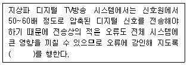
- 채널 부호화
- 신호원 부호화
- MPEG 부호화
- AC-3 부호화
(정답률: 70%)
53. 다음 중 화면에서 여름의 대낮이나 햇볕의 강함을 강조하며 명암의 대비를 확실히 하기 위해 밝은 곳은 더 밝게, 어두운 곳은 더 어둡게 느끼게 하는 조명기법으로 가장 적절한 것은?
- 하이 키(High key)
- 로우 키(Low key)
- 플랫 키(Flat key)
- 하드 키(Hard key)
(정답률: 77%)
54. 다음 중 직사광에 해당하는 빛을 내며 빛의 다양성, 명암이나 그림자에 의한 입체감 등을 표현하기 위한 조명기구로 가장 적절한 것은?
- 스포트 라이트(SpotLight)
- 플러트 라이트(Flood Light)
- 베이스 라이트(Base Light)
- 이펙트 라이트(Effect Light)
(정답률: 83%)
55. 어두운 배경에 피사체에게만 하이라이트를 주는 기법으로 흑백 텔레비전에서는 아주 효과적으로 사용할 수 있는 반면 컬러 텔레비전에서는 다루기가 매우 힘든 조명 기법은?
- 카메오 조명(Cameo Lighting)
- 실루엣 조명(Silhouette Lighting)
- 색배경 조명
- 크로마키지역 조명
(정답률: 67%)
56. 다음 중 오디오 믹싱 시 유의할 점과 가장 거리가 먼 것은?
- 주 음향이 부 음향에 묻히지 않도록 유의한다.
- 효과음은 주 음성 레벨보다 너무 크지 않도록 유의한다.
- 용도에 적합한 마이크를 선택하여야 한다.
- 두 개 이상의 음원을 믹싱할 떄 마스킹 효과는 신경 쓸 필요가 없다.
(정답률: 81%)
57. 주어진 이미지의 각 픽셀들이 가지는 밝기 값의 분포 상황를 나타내는 것을 무엇이라 하는가?
- 이미지 히스토그램
- 포인트 프로세싱
- 균일화(Equalization)
- 솔라이징(Solarizing)
(정답률: 77%)
58. 0.0002[dyne/cm2]의 압력이 고막에 전달될 때의 음압레벨이 0[dB SPL]이다. 다음 중 일상 대화 수준의 음압에 가까운 [dB SPL] 값은 어느 것인가?
- 140[dB SPL]
- 100[dB SPL]
- 60[dB SPL]
- 20[dB SPL]
(정답률: 63%)
59. 다음은 디지털 방송의 전송형식인 MPEG-TS를 나타낸다. PID(Packet Identifier)가 0, 10, 50인 패킷에 대하여 순서대로 기술된 것은?
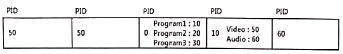
- PAT, PMT, program1의 video
- PMT, PAT, program1의 video
- program1의 video, PAT, PMT
- PMT, program1의 video, PAT
(정답률: 61%)
60. 다음 중 HDTV 중계방송 차량에 설치되는 보편적인 시스템으로 틀린 것은?
- 8-VSB 송신기
- Video Encoder
- Video Mixing Unit
- Up/Down Converter
(정답률: 73%)
4과목: 방송통신 시스템
61. 다음 문장에서 설명하고 있는 것으로 옳은 것은?
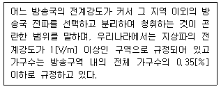
- 서비스에어리어(Service Area)
- 블랭킷에어리어(Blanket Area)
- 최고사용주파수(Maximum Usable Frequency)
- 최적운용주파수(Frequency Of Optimum Traffic)
(정답률: 82%)
62. 64QAM 변조방식의 전송밀도 (bps/Hz)는 얼마인가?(오류 신고가 접수된 문제입니다. 반드시 정답과 해설을 확인하시기 바랍니다.)
- 3
- 4
- 6
- 8
(정답률: 14%)
63. 표본화에 의하여 얻어진 PAM 신호를 디지털화하기 위하여 진폭축으로 이신값을 갖도록 처리하는 것을 무엇이라고 하는가?
- 부호화
- 양자화
- 이진화
- 디지털화
(정답률: 77%)
64. 다음 중 가입자 100명에 대한 연결을 매쉬형 회선망으로 구성시 필요한 최소 회전수는?
- 4,950개
- 6,950개
- 8,900개
- 9,900개
(정답률: 70%)
65. 10[kHz] 대역에서 16QAM 변조방식을 사용하여 전송할 수 있는 데이터의 최대 전송속도는?
- 10[kbps]
- 20[kbps]
- 40[kbps]
- 80[kbps]
(정답률: 72%)
66. 광섬유 케이블은 물질 사이에서 일어나는 빛의 어떤 성질을 이용한 것인가?
- 전반사
- 회절
- 굴절
- 입자성
(정답률: 80%)
67. 다음 중 야외 음악회와 같이 열린공간에서의 야간 중계시 최상의 영상제작을 위한 유의사항으로 틀린 것은?
- Jimmy-Jib 카메라나 스테디캠으로 이용하는 EFP 카메라는 와이드 렌즈를 사용하기 때문에 녹화 전에 Full-Focus를 조정해야 한다.
- 무대와 객석의 밝기 기준은 가능한 객석이 무대보다 밝지 않도록 카메라 아이리스(Iris)를 조정한다.
- 넓은 야외에서는 조명이 부족하므로 카메라 렌즈배율 사용을 자주하여 영상의 해상도를 높이도록 한다.
- 인물 샷을 중심으로 하는 카메라는 인물 색조와 밝기를 스코프와 모니터로 확인하여 수시로 적절하게 조정한다.
(정답률: 83%)
68. 다음 중 디지털 라디오 방송기술이 갖는 특징이 아닌 것은?
- 시간과 장소에 구애 받지 않고 청취할 수 있다.
- 수신기의 소비전력이 높다.
- 다양한 프로그램 콘덴츠의 제공이 가능하고 넓은 수신대역의 사용이 가능하다.
- 프로그램과 관련된 문자정보의 데이터서비스가 가능하다.
(정답률: 76%)
69. 다음 중 FM 송신기의 최고변조주파수가 15[kHz]인 경우 100[%]변조시 점유주파수의 대역폭은?
- 10[kHz]
- 90[kHz]
- 180[kHz]
- 270[kHz]
(정답률: 66%)
70. 라디오 슈퍼 헤테로다인 수신기의 특징이 아닌 것은?
- 감도와 선택도가 좋다.
- 충실도가 좋다.
- 회로가 복잡하고 조정이 어렵다.
- 광대역에 걸쳐 선택도가 떨어진다.
(정답률: 73%)
71. 다음 중 라디오 방송시스템에서 오디오의 신호레벨을 측정하는데 필요한 계기는?
- 백터스코프
- VU(Volume Unit) meter
- PPM(Peak to PeaK Meter)
- 오실로스코프
(정답률: 74%)
72. 다음 중 FM 수신기 보조회로가 아닌 것은?
- 진폭제한기
- 디엠퍼시스회로
- 스켈치 회로
- IDC 회로
(정답률: 52%)
73. CATV 동축케이블 내의 전자파 속도는? (단, εr=2.3(비투자율), μr=1(비유전율), ε0≒8.855×10-12[F/m], μ0=4π×10-7[H/m]
- 약 1.5×108[m/s]
- 약 2.0×108[m/s]
- 약 2.5×108[m/s]
- 약 3.0×108[m/s]
(정답률: 72%)
74. 텔레비전 송신설비 중 VHF 송신 안테나의 종류로 슬롯 안테나 (Slot Antenna)계에 해당하는 것은?
- 야기 안테나
- 쌍루프 안테나
- 진행파형 안테나
- 다소자 링 안테나
(정답률: 70%)
75. 다음 중 영상반송파신호대 잡음비를 츩정하는 것은 무엇을 하기 위한 것인가?
- 영상 신호의 해상도 저하방지와 잡음이 발생되는 것을 방지하기 위해
- 영상 반송파의 레벨변동에 대한 잡음을 방지하기 위해
- 영상 신호와 음성 신호의 상호간섭을 방지하기 위해
- 잡음을 줄여 양호한 TV 화질을 보장하기 위해
(정답률: 63%)
76. 유럽 디지털 방송 방식인 DVB에 대한 설명과 다른 것은?
- 영상 소스의 코딩과 다중화는 MPEG 3 기술을 사용한다.
- 4 : 3, 16 : 9 등의 영상 포맷을 지원해야 한다.
- IRD는 빠른 채널 호핑 시간을 가져야 하며 0.5초를 초과할 수 없다.
- 오디오 소스 코딩은 MPEG Layer Ⅱ를 사용한다.
(정답률: 60%)
77. 다음과 같은 네트워크 구조에서 라우터가 호스트에서 호스트가 속해 있는 그룹(Group) 정보를 요청하는데 사용되는 IGMP 메시지는?
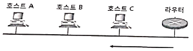
- Reply
- Query
- Report
- Question
(정답률: 68%)
78. 다음은 태양을 중심으로 회전하는 행성들의 운동을 관측한 결과로 얻어낸 법칙이다. 다음에 해당하는 법칙은 무엇인가?
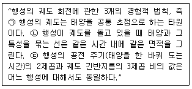
- 케플러 법칙(Kepler's Law)
- 탈보트-플래토의 법칙(Talbot-Plateau's Law)
- 스티븐의 법칙(Steven's Law)
- 스톡스의 법칙(Stoke's Law)
(정답률: 87%)
79. 다음 괄호 안에 들어갈 용어로 적절한 것은?
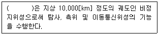
- 저궤도 위성
- 중궤도 위성
- 고궤도 위성
- 극궤도 위성
(정답률: 78%)
80. 다음 중 접시형(parabola) 안테나의 이득을 결정하는 요소로 옳지 않은 것은?
- 주파수
- 안테나 직경
- 파장
- 안테나의 높이
(정답률: 80%)
5과목: 전자계산기 일반 및 방송설비기준
81. 주기억장치의 크기가 64[Mbyte], 캐쉬 크기가 64[Kbyte]이고 주기억 장치와 캐쉬 사이에 4[byte] 블록 단위로 데이터 전송이 이루지는 시스템에서 연관사상 (Associative Mapping)으로 관리된다. 이 때 캐쉬 1라인(Line)에 필요한 태그(Tag)의 크기는?
- 8비트
- 10비트
- 22비트
- 24비트
(정답률: 46%)
82. 다음 중 비동기 인터페이스 (Asynchronous Interface)에 대한 설명으로 틀린 것은?
- 컴퓨터와 입출력 장치가 데이터를 주고 받을 때 일정한 클록 신호의 속도에 맞추어 약정된 신호에 의해 동기를 맞추는 방식이다.
- 동기를 맞추어 약정된 신호는 시작(Start), 종료(Stop) 비트 신호이다.
- 컴퓨터 내에 있는 입출력 시스템의 전송 속도와 입출력 장치의 속도가 현저하게 다를 때 사용한다.
- 일반적으로 컴퓨터 본체와 주변 장치 간에 직렬 데이터 전송을 하기 위해 사용된다.
(정답률: 55%)
83. . 8진수(735.56)8을 16진수로 전환한 것은 어느 것인가?
- (1DD,B8)16
- (1DD.B1)16
- (EE1.B1)16
- (EE1.B8)16
(정답률: 70%)
84. 컴퓨터가 8비트 정수 표현을 사용할 경우 -25를 부호와 2의 보수로 올바르게 표현한 것은?
- 11100111
- 11100011
- 01100111
- 01100011
(정답률: 64%)
85. 다음 중 컴퓨터에서 수를 표현하는 방식이 아닌 것은?
- 양자화 표현
- 1의 보수 표현
- 2의 보수 표현
- 부호와 절대치 표현
(정답률: 80%)
86. 다음 중 자기보수 코드(Self Complement Code)인 것은?
- 3초과 코드
- BCD 코드
- 그레이 코드
- 해밍 코드
(정답률: 65%)
87. 하나의 프린터를 여러 프로그램이 동시에 사용할 수 없으므로 논리장치에 저장하였다가 프로그램이 완료 시 개별 출력할 수 있도록 하는 방식은?
- ChanneL
- DMA
- Spooling
- Virtual Machine
(정답률: 78%)
88. Open Source로 개방되어 사용자가 변경이 가능한 운영체제는?
- Mat OS
- MS-DOS
- OS/2
- Linux
(정답률: 75%)
89. 다음 중 예약 또는 증권 서비스 등에 적합한 처리 시스템 방식은?
- 시분할 처리 시스템
- 실시간 처리 시스템
- 분산 처리 시스템
- 일괄 처리 시스템
(정답률: 79%)
90. 병렬 프로세서의 한 종류로 여러 개의 프로세서들이 서로 다른 명령어와 데이터를 처리하는 진정한 의미의 병렬 프로세서로 대부분의 다중 프로세서 시스템과 다중 컴퓨터 시스템이 이 분류에 속하는 구조는?
- SISD(Single Instruction stream Single Data stream)
- SIMD(Single Instruction stream Multiple Data stream)
- MISD(Multiple Instruction stream Single Data stream)
- MIMD(Multiple Instruction stream Multiple Data stream)
(정답률: 69%)
91. 방송을 양호하게 수신할 수 있는 구역으로 전계강도가 과학기술정보통신장관이 정하여 고시하는 기준 이상인 구역은?
- 방송구역
- 블랭킷에어리어
- 전파구역
- 셀에어리어
(정답률: 70%)
92. 다음 중 방송법에 의한 지상파방송사업이란?
- 방송을 목적으로 하는 지상의 무선국을 관리·운영하며 이를 이용하여 방송을 행하는 사업
- 전송·선로 시설을 이용하여 행하는 다채널방송을 행하는 사업
- 인공위성의 무선국을 이용하여 행하는 방송사업
- 중개유선방송을 재전송하는 방송사업
(정답률: 81%)
93. 공동체 라디오 방송사업자가 될수 있는 기관 또는 단체는?
- 대한민국정부
- 종교단체
- 지방자치단체
- 비영리단체
(정답률: 85%)
94. 지상파 방송사업을 하고자 하는 자는 누구에게 방송국 허가를 받아야 하는가?
- 대통령
- 방송통신위원회
- 문화체육관광부장관
- 방송통신심의위원회
(정답률: 76%)
95. 중계유선방송사업 및 음악유선방송사업의 결격사유와 관계없는 것은?
- 중계유선방송사업 및 음악유선방송사업의 허가 또는 등록이 취소된 후 5년이 경과되지 아니한 자
- 미성년자 또는 한정치산자
- 파산신고를 받은 자로서 복권되지 아니한 자
- 외국인 또는 외국의 정부나 단체
(정답률: 75%)
96. 전송·선로설비에 대한 기술기준의 적합여부 확인 등에 관하여 필요한 사항은 무엇이라 정하는가?
- 교육과학기술부령
- 행정안전부령
- 과학기술정보통신부 고시
- 문화체육관광부령
(정답률: 76%)
97. 종합 유선방송신호를 전송하기 위한 전송선로시설의 질적 수준 측정 항목에 포함되지 않는 것은?
- 영상반송파의 신호레벨
- 음성반송파의 주파수편차
- 혼변조도
- 채널간 영상반송파의 레벨차
(정답률: 52%)
98. 다음 중 종합유선방송국설비와 전송선로설비의 분계점에 대한 설명으로 잘못된 것은?
- 전송선로설비가 동축케이블인 경우 : 진폭변조기와 동축케이블의 최초 접속점
- 전송선로설비가 UTP케이블인 경우 : 진폭변조기와 UTP케이블의 최초 접속점
- 전송선로설비가 무선방식인 경우 : 진폭·주파수변조기와 무선송신기의 최초 접속점
- 전송선로설비가 광케이블인 경우 : 진폭·주파수변조기와 광송신기의 최초 접속점
(정답률: 72%)
99. 종합유선방송국의 방송 채널 별 주파수 대역은?
- 4.2[MHz]
- 4.75[MHz]
- 6[MHz]
- 6.25[MHz]
(정답률: 80%)
100. 중계유선방송의 영상반송파 수신자설비의 분계점에서 신호 레벨의 기준값은 얼마인가?
- 65~85[dBμN](75Ω 기준)
- 85~95[dBμN](75Ω 기준)
- 54[dBμN]이상
- 70[dBμN]이상
(정답률: 68%)